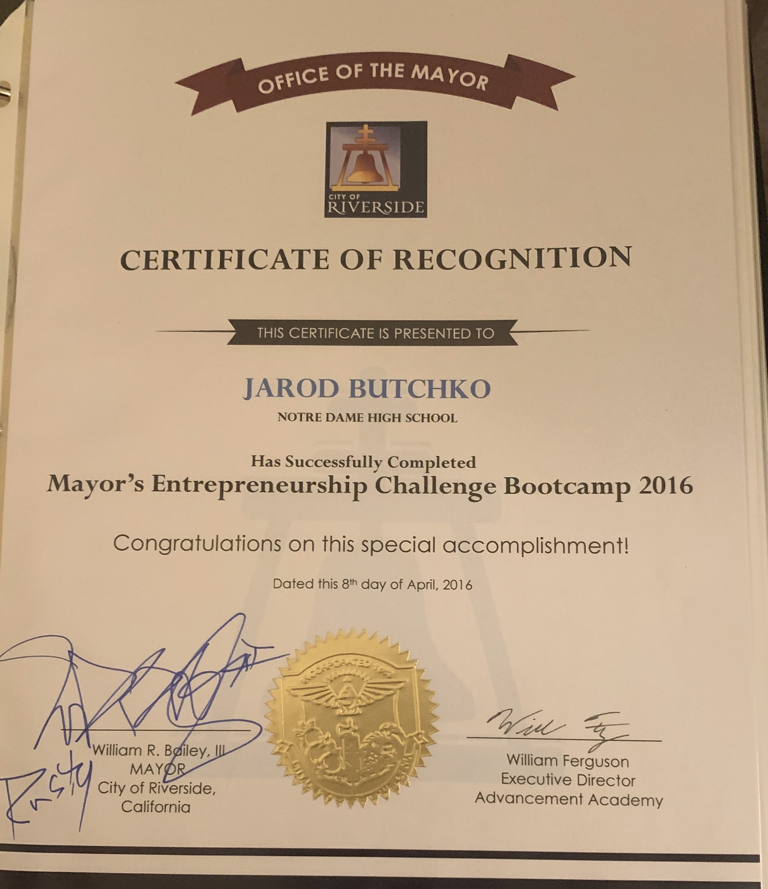
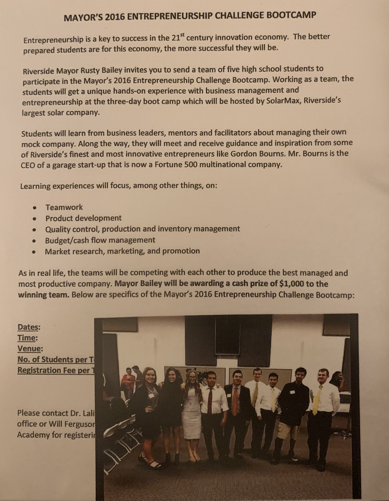
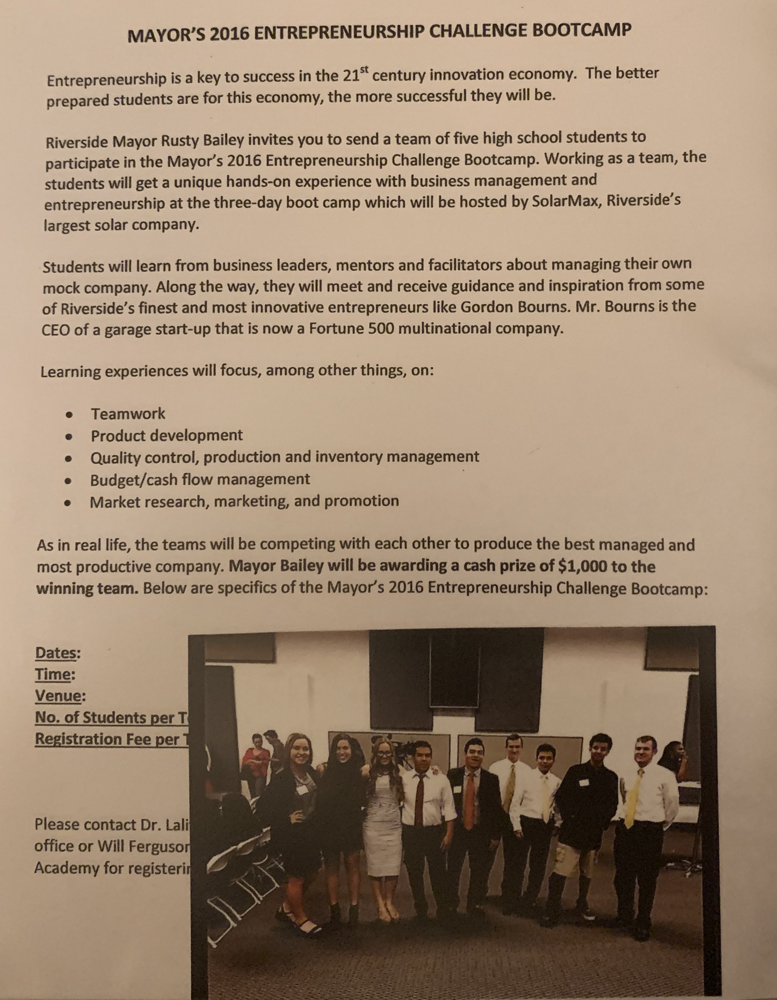

Jared Butchko
Jared Butchko grew up in the Greater Los Angeles Area and had always been interested in accounting. Math was his favorite subject throughout middle and high school which directly correlated to his choice of majoring in business administration with an emphasis on accounting.
What started as strong work ethic and punctuality eventually lead to dependability and persistance towards every task at hand. Jared became adaptable to almost any environment, including fast paced and meticulous settings, through discipline acquired while he was young.
Not only does Jared bring intensity and positive attitude to any situation, he is well known by his peers for completing each task thoroughly and accurately. This is reflected by his nearly straight A grades received during every level of his education.
Experience
Kennel/Tech Assistant
• Tracks inventory of janitorial supplies, medicinal supplements, and maintenance materials through careful inspection and documentation of expiration, quantity, and condition.
• Works closely with maintenance and janitorial services to effectively assemble and maintain kennels, shelves, chairs, desks, computers, surgical tables, floorings, and decorative objects.
• Files charts and paperwork in an alphabetical format according to client’s first and last name.
Participant
• Managed financial, operational, and business decisions of a mock company, such product development, quality control, inventory management, budget/cash flow management, market research, and merchandise promotion.
• Discussed and communicated potential decisions, research, and information with a small team of fellow peers.
• Received mentoring from industry professionals, such as Gordon Bourns: CEO of a current Fortune 500 business.
• Competed against fourteen teams to make the most financially stable and beneficial decisions daily.
Secretary
• Took minutes accurately and effectively during each club meeting, including upcoming events, possible expenses, attendee names, event opportunities, and sponsor occurrences.
• Reported minutes to club officers within requested timeslots, verbally summarizing information if needed.
• Actively participated and represented the environmental club at events, activities, and invites.
• Discussed potential solutions for slacking attendance at events and funding alternatives.
Education
Univerity of California Riverside
Portfolio



